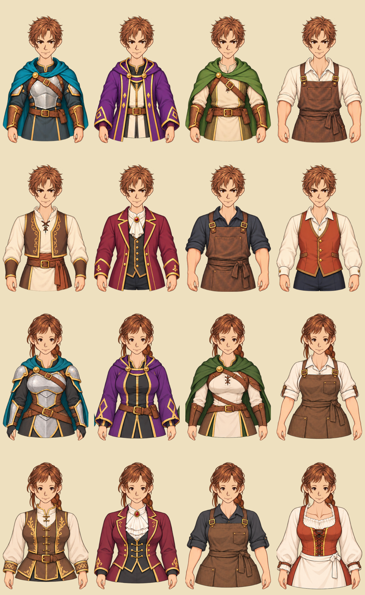
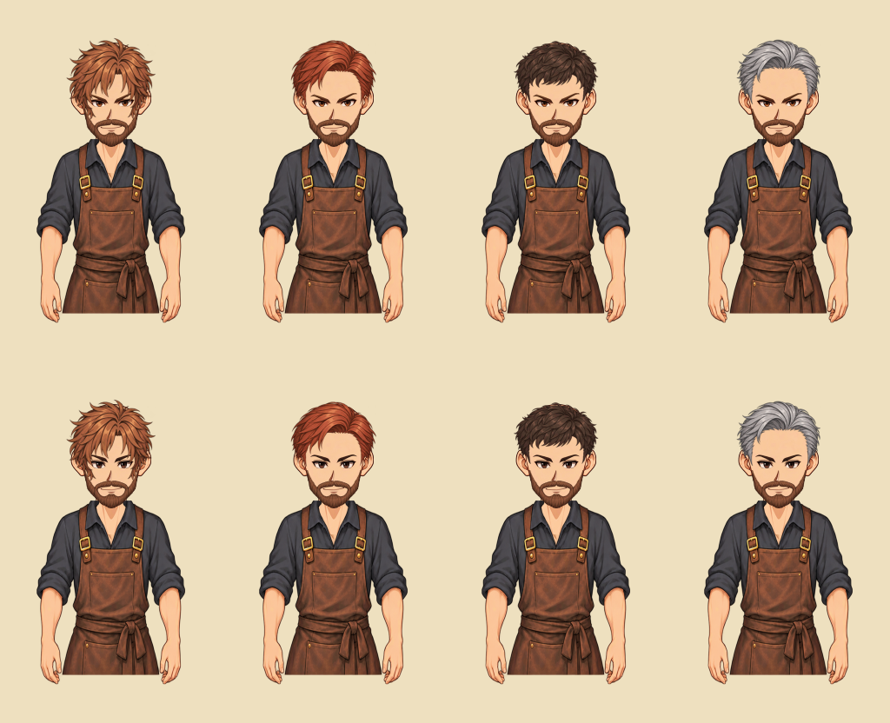
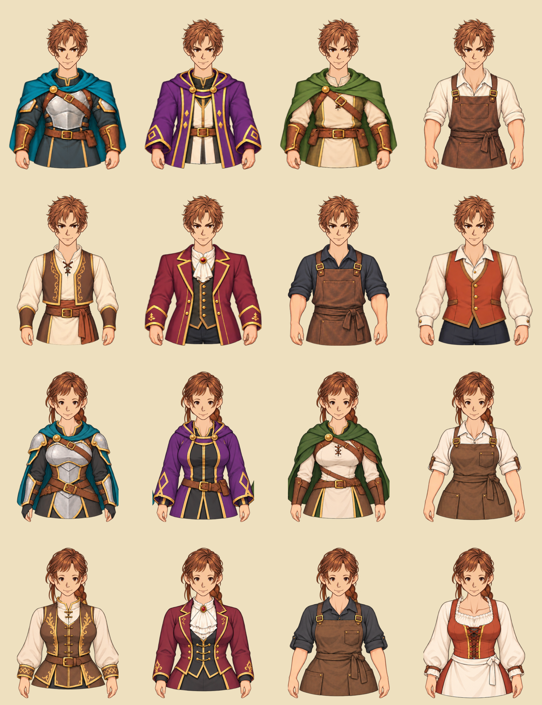
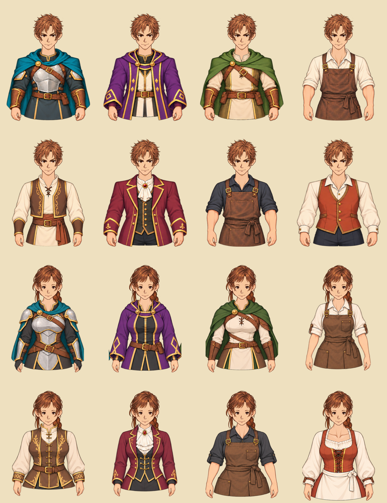
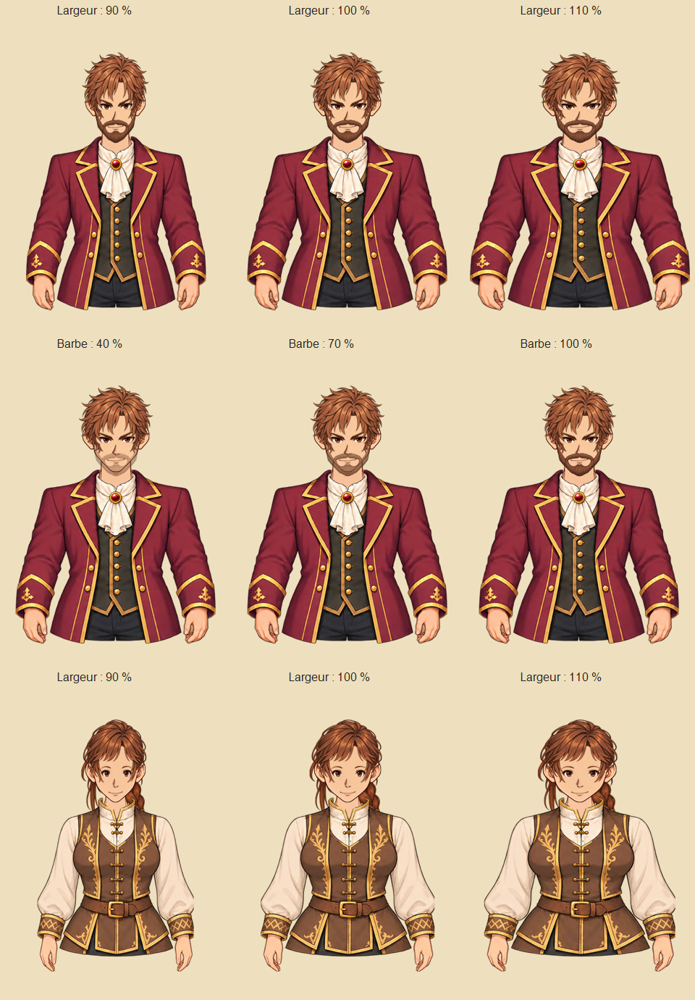
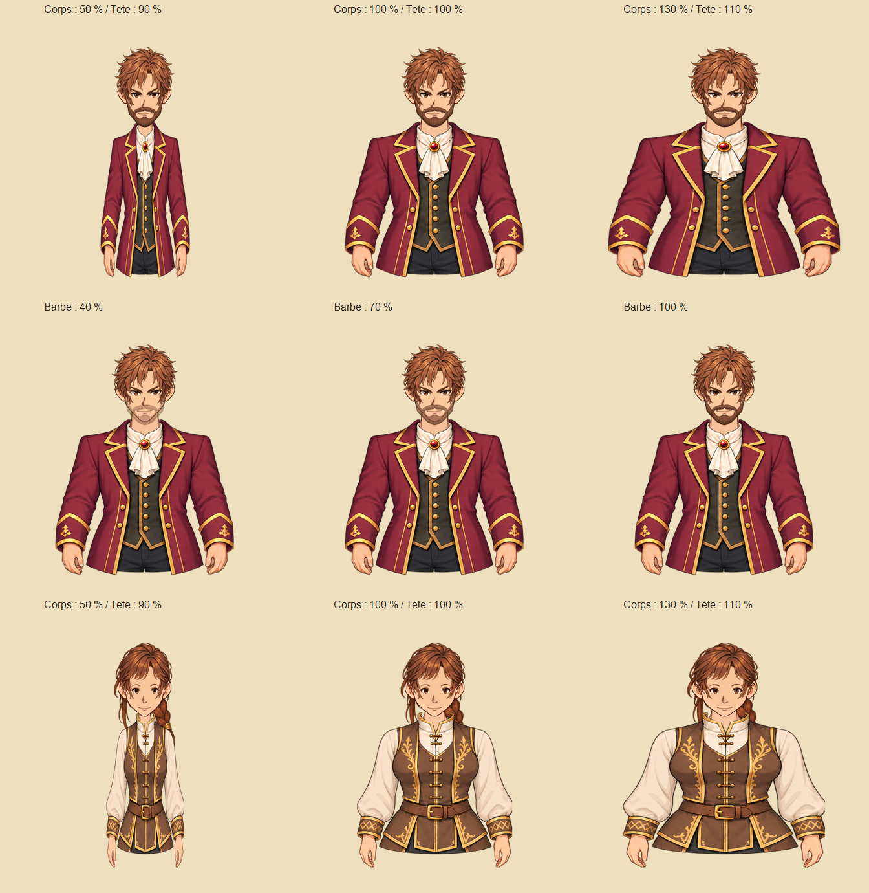

Des héros cohérents avec leurs sprites et des PNJ composés dans deux bibliothèques de proportions distinctes.
Comprendre ce que cela implique
Les portraits fixes des six héros définissent la palette et le traitement anime. Le Mage masculin abandonne le chapeau pointu au profit d’une capuche rabattue, également présente sur son sprite.
Les PNJ génériques utilisent une bibliothèque masculine ou féminine : tête, yeux, nez, bouche, vêtements et accessoires restent dans cette bibliothèque. La coiffure est indépendante de la tête et ne contient ni peau ni oreilles ; les cheveux longs ont des parties avant et arrière assorties. Un descripteur croisé est refusé.
Il s’agit uniquement de présentation : les caractéristiques, déplacements, productions et récompenses restent validés par le serveur. L’atelier de portraits permet d’inspecter plusieurs assemblages sans modifier une partie.
L’atelier permet de comparer quatre coupes sur un même visage dans chaque bibliothèque et de vérifier plusieurs lots de douze personnages masculins et douze personnages féminins. Les calques v1 restent archivés ; cette correction ne change pas les règles du jeu.
Les visages larges sont temporairement désactivés : chaque bibliothèque conserve une seule base de tête active. Les anciens fichiers restent archivés, mais ne sont plus générés ni acceptés dans un assemblage.
Les conversations composées réservent une scène au buste et au décor : au-dessus du texte sur téléphone, à côté du panneau sur écran large. Le titre clair reste lisible sur un bandeau sombre. Un défaut de découpage des cheveux qui ajoutait un fragment sous les yeux est corrigé.
La bibliothèque v3 réduit ensemble tête, traits et cheveux à 72 % de leur taille précédente sur une toile de 512 × 832 pixels. Les seize tenues ont des épaules complètes et des marges latérales ; les tenues à manches retroussées incluent les avant-bras et les mains. Les anciennes versions restent archivées.
La v4 sépare tête, cou plus fin et haut du torse. Les coiffures sont abaissées, les yeux féminins davantage espacés et les bustes masculins moins étirés en hauteur. Le buste descend dans la scène pour cacher la limite de l’illustration. Tous les dialogues gardent les mêmes dimensions à écran constant : 40 % de la hauteur pour le texte et les choix en portrait, panneau latéral en paysage. La réplique du forgeron est reformulée sans changer les tarifs ni les règles serveur.
La v5 remplit les cols ouverts avec un haut du torse adapté à chaque tenue et agrandit les coiffures de 6 %. Le bandeau montre une seule fois le lieu et le rôle, sans répétition au-dessus du texte. L’éditeur HTML permet de choisir les pièces, régler chaque groupe de calques et le cadrage, comparer les formats d’écran et conserver les essais dans un brouillon local ou un JSON validé. Les réglages restent dans l’éditeur ; ils ne modifient aucune partie ni aucune règle du jeu.
La v6 harmonise le gabarit apparent des huit tenues par bibliothèque et ajuste le dessous de torse avec le vêtement. Les yeux féminins 1 se déplacent de 2 pixels vers la gauche et la barbe suit la mâchoire du visage masculin actif. Les brouillons et exports v5 conservent leurs réglages dans l’éditeur. Les anciennes images restent archivées ; aucune règle du jeu ne change.
La v7 redessine les seize tenues avec un gabarit plus large. Le cou et le torse forment une base continue sous la tête indépendante. Le col arrière passe derrière le corps, les revers avant restent devant et une même zone de cou est protégée sur toutes les tenues. L’éditeur réunit les réglages du cou et du torse tout en archivant les anciens réglages du cou. Les versions précédentes sont conservées. Aucun effet sur les règles du jeu.
25 octobre 2026 : les tenues masculines de guerrier, mage, éclaireur, bourgmestre et tavernier sont élargies horizontalement à 115 %, avec des épaules redressées et plus carrées. Le cou masculin est élargi à 129 % avec un raccord progressif au torse dans le même calque. La hauteur et le cadrage des dialogues restent constants. Les brouillons v7 sont repris dans l’éditeur. Aucun effet sur les règles du jeu.
25 octobre 2026 : ajustements des tenues féminines sur la toile de 512 × 832 pixels : guerrière à −5 px horizontal ; travailleuse et bourgmestre à 90 % de largeur, −3 px horizontal et −12 px vertical ; tavernière à +16 px vertical. Les réglages portent sur le vêtement et le col arrière, dans le jeu et l’éditeur. Le cou-torse reste aligné sur la tête. Les valeurs de l’éditeur sont des retouches additionnelles. Aucun effet sur les règles du jeu.
25 octobre 2026 : le vêtement féminin de chef de village et son col arrière sont remontés de 15 pixels sur la toile de 512 × 832, dans le jeu et l’éditeur. La tête et le cou-torse conservent leur position. Aucun effet sur les règles du jeu.
25 octobre 2026 : chaque PNJ composé reçoit une largeur de 90 à 110 % appliquée ensemble à tous ses calques, et une opacité de barbe de 40 à 100 % lorsqu’il porte cet accessoire. Ces variations sont déterminées par son identité et restent stables après rechargement ou changement de lieu. Le décor et les portraits narratifs fixes ne sont pas déformés. L’éditeur propose les mêmes paramètres, les conserve dans son brouillon et ses exports JSON, et permet une opacité de barbe de 0 à 100 % pour les essais. Les anciens descripteurs sans ces valeurs restent à 100 %. Aucun effet sur les caractéristiques, combats, productions ou validations du serveur.
25 octobre 2026 : la plage de corpulence des PNJ est étendue à 50–180 %, pour la génération déterministe, la validation des descripteurs et le réglage de largeur globale dans l’éditeur. Tous les calques du personnage suivent le même facteur horizontal ; sa hauteur et le décor restent constants. Les variations de barbe sont conservées. Aucun effet sur les règles ou les caractéristiques du jeu.
25 octobre 2026 : la corpulence relie désormais deux blocs de largeur. Le bloc tête (visage, cheveux, yeux, nez, bouche, barbe, cicatrices et boucles d’oreilles) varie de 90 à 110 %. Le bloc corps (cou-torse, vêtements, cols arrière et pendentifs) varie de 50 à 130 %. Un seul réglage les fait évoluer ensemble dans le même sens : corps 50 % / tête 90 %, référence 100 % / 100 %, corps 130 % / tête 110 %. La hauteur reste constante. La génération reste stable par identité, l’opacité de barbe est conservée et l’éditeur affiche les deux valeurs. Les anciens brouillons au-dessus de 130 %, jusqu’à l’ancienne limite de 180 %, sont ramenés à 130 % tout en conservant les autres retouches. Aucun effet sur les règles du jeu.
25 octobre 2026 : la largeur minimale du bloc corps passe à 70 %, avec un maximum de 130 %. Le bloc tête reste lié de 90 à 110 %, avec les références corps 70 % / tête 90 %, 100 % / 100 % et 130 % / 110 %. Les anciens brouillons inférieurs à 70 % sont ramenés à ce minimum sans perdre leurs autres retouches. Ce réglage de présentation ne change aucune règle du jeu.








Dans cet article
- Disponible depuis le 24 octobre 2026
- Bibliothèques de PNJ v7 — correction du 25 octobre 2026
- Identité stable et décor
- Architecture et vérification
- Ajustement masculin v8 — 25 octobre 2026
- Ajustements des vêtements féminins — 25 octobre 2026
- Corpulence et densité de barbe — 25 octobre 2026
- Corpulence en deux blocs liés — 25 octobre 2026
Détails de référence
Texte de référence mis en forme et conservé dans l’historique de cet article. Les paragraphes datés peuvent décrire une évolution ou une étape antérieure.
Disponible depuis le 24 octobre 2026
Les six portraits des héros suivent une direction anime fantasy : contours nets, couleurs lisibles et ombres légères. Ils conservent les costumes des sprites : cape bleu pétrole du Guerrier, violet et or du Mage et cape verte de l'Éclaireur. Le Mage masculin porte désormais les cheveux courts dégagés et une capuche rabattue. Son sprite de marche utilise aussi cette tenue, sans chapeau pointu. La Mage féminine conserve son chapeau. Les anciens fichiers restent archivés.
Les portraits des héros sont des illustrations fixes. La personnalisation de leur visage par le joueur et la composition de leurs animations ne sont pas proposées. Les calques dérivés de cette direction artistique servent aux PNJ génériques.
Bibliothèques de PNJ v7 — correction du 25 octobre 2026
La première bibliothèque v1 combinait des éléments masculins et féminins avec des points d'ancrage communs. Elle est remplacée par deux bibliothèques distinctes, v7/male et v7/female, chacune avec ses proportions de tête, de cou, de traits et de vêtements. Les fichiers v1 à v6 restent conservés pour l'historique.
La toile v3 mesure 512 × 832 pixels. La tête, les traits et les cheveux sont réduits ensemble à 72 % de leur taille v2 pour conserver leurs placements relatifs. Les seize tenues sont redessinées jusqu'aux hanches, avec les deux épaules entières et une marge latérale transparente. Les tenues de travail et de forge comprennent les avant-bras et les mains sous leurs manches retroussées. Ces parties suivent la coupe des manches. En v4, tête, cou et haut du torse étaient trois calques distincts. La tête s'arrête à la mâchoire. Les coiffures descendent de 12 pixels (8 pour les parties arrière). Chaque œil féminin s'écarte de 7 pixels du centre ; nez et bouche gardent leur ancrage. Les tenues masculines cessent d'être aussi étirées verticalement : leur hauteur est ramenée à 88 %, avec le col fixe. Les bibliothèques restent séparées.
La v5 ajoute le haut du torse et les clavicules sous les cols ouverts. Un dessous est découpé dans l'enveloppe de chacune des huit tenues de chaque bibliothèque, afin de remplir les espaces autour du cou sans dépasser des épaules. L'indice du corps doit correspondre à celui du vêtement ; un assemblage incohérent est refusé. Les coiffures avant et arrière sont agrandies ensemble de 6 % autour du même ancrage pour mieux couvrir le crâne. Le visage, les yeux et le cou restent séparés. Les anciens fichiers ne sont pas remplacés.
La v6 harmonise le gabarit apparent des huit tenues dans chaque bibliothèque. La largeur médiane de la silhouette dans la bande du haut du buste (lignes 440 à 520 de la toile) est ramenée à 300 pixels pour les femmes et à 320 pixels pour les hommes. Le centrage et la hauteur restent fixes ; la coupe des manches et des capes reste propre à chaque tenue. Le dessous de torse reçoit exactement le même ajustement horizontal que son vêtement pour préserver les raccords des cols.
La première paire d'yeux féminins (female-eyes-0, « Variante 1 » dans l'éditeur) est décalée de 2 pixels vers la gauche, sans déplacement vertical. La barbe masculine est redessinée et repositionnée sur la mâchoire du visage actif ; l'ouverture laisse visible le calque de bouche. Ces corrections ne changent aucune règle du jeu.
La v7 remplace les silhouettes trop étroites par seize tenues redessinées avec des épaules et des bustes plus larges. Chaque bibliothèque garde un même profil adulte et une pose de bras commune. Les dessins sont placés sur une toile de 512 × 832 pixels avec des marges latérales ; les avant-bras et les mains restent présents. Le rétrécissement systématique de la v6 n'est plus appliqué.
Le cou, les clavicules et le haut du torse sont dessinés ensemble dans un seul calque de corps continu, sans raccord entre deux morceaux. Le visage reste séparé. Chaque tenue dispose d'un corps adapté à son contour et d'un col arrière assorti. L'ordre d'affichage est : cheveux arrière, col arrière, corps cou-torse, visage, vêtement avant, traits, cheveux avant et accessoire. Une zone commune du cou est protégée dans les seize vêtements avant : la partie postérieure du col est transférée derrière le corps tandis que les revers avant restent visibles. Le corps, le vêtement avant et le col arrière doivent porter le même indice.
Chaque bibliothèque utilise une base de tête chauve, quatre coupes de cheveux, deux paires d'yeux avec sourcils, deux nez, deux bouches et huit tenues. Les tenues féminines sont dessinées pour cette silhouette, avec une coupe propre. La barbe existe uniquement dans la bibliothèque masculine ; les cicatrices, boucles d'oreille et pendentifs ont leurs fichiers et placements propres à chaque bibliothèque. L'absence d'accessoire reste possible.
Les variantes de visage larges male-face-1 et female-face-1 sont désactivées depuis le 24 octobre 2026 : leurs proportions avec les bustes et l'écartement apparent des yeux ne conviennent pas encore. Elles ne sont plus sélectionnées, ni acceptées dans un assemblage, ni préchargées. Les fichiers restent conservés pour une éventuelle reprise ; seule la base face-0 de chaque bibliothèque est actuellement utilisée. Les coiffures, traits, vêtements et accessoires gardent leurs identifiants et leur sélection stable. Aucune règle du jeu ne change.
La coupe de cheveux est un calque indépendant : elle ne contient ni peau, ni oreilles, ni yeux et n'est pas fusionnée avec la tête. Le visage reste identique lorsqu'on change de coupe. Pour les coiffures longues féminines, une partie arrière passe derrière la tête et le vêtement, puis une partie avant affiche la frange et les mèches. Les deux parties portent le même indice de coupe et ne peuvent pas être désaccordées. La toile est de 512 × 832 pixels, mais les points d'ancrage sont propres à chaque bibliothèque et à chaque coupe.
Les chefs génériques, les responsables de mine, carrière et chantier forestier, les responsables de fort, les forgerons, les taverniers et les PNJ recrutables en taverne utilisent ces couches. Les PNJ recrutables apparaissent en vignette dans les choix de conversation. Les illustrations narratives définies dans un scénario ou dans l'éditeur restent prioritaires et ne sont pas remplacées.
Identité stable et décor
Un descripteur de présentation sérialisable indique la version, la bibliothèque masculine ou féminine et l'identifiant de chaque pièce, par exemple male-hair-0 ou female-eyes-1. Il est dérivé de l'identifiant permanent du PNJ, sans tirage aléatoire à l'ouverture de la fenêtre. Un chef utilise l'identifiant de son lieu ; un forgeron et un tavernier ont des identités distinctes dans le même lieu. Un spécialiste recrutable conserve ses traits lorsqu'il change de taverne ou après une reprise. La bibliothèque masculine ou féminine suit la base déjà attribuée par la v1 ; un genre explicite peut aussi être fourni au générateur de présentation. Une pièce de l'autre bibliothèque rend le descripteur invalide : elle n'est jamais affichée par substitution ou par redimensionnement automatique. Les identifiants du catalogue et ses identifiants doivent rester stables ; une nouvelle collection utilisera une nouvelle version sans réordonner les pièces déjà utilisées.
Le décor suit le type de lieu : village, ville/capitale, fort, mine, carrière ou forêt/chantier/camp. Les conversations du forgeron et du tavernier montrent leur atelier ou leur salle. Les PNJ recrutables sont présentés dans la taverne. Les tenues suivent la fonction : travailleur, responsable civil, artisan ou aventurier.
Architecture et vérification
Cadrage des conversations — 24 octobre 2026
Tous les dialogues partagent une géométrie fixe à taille d'écran donnée, y compris ceux qui utilisent un portrait narratif. En portrait, le panneau de texte et de choix occupe exactement 40 % de l'écran. Le bandeau du titre mesure 104 pixels, auxquels s'ajoute la zone de sécurité supérieure ; la scène utilise le reste. La longueur du texte et le nombre de choix ne changent ni la scène ni le portrait. Seul le panneau défile. En paysage, le titre mesure 88 pixels et le panneau est placé à droite, sur 38 % de la largeur avec un minimum de 300 pixels. Ces tailles suivent les dimensions de l'écran et son orientation, jamais le contenu.
Le buste composé descend de 16 % de la hauteur de la scène pour cacher sa limite inférieure. Son échelle reste stable lorsqu'on passe du texte aux choix ; le décor reste visible. La taille du titre est conservée et son texte est limité à deux lignes. La réplique du forgeron emploie des phrases naturelles et distingue une, plusieurs ou aucune commande restante. Le tarif des outils et les règles restent identiques : les valeurs continuent de provenir du serveur.
Le bandeau montre le lieu en petit puis le rôle ou nom du personnage en grand, par exemple « Mine de fer de la Couronne » puis « Chef des mineurs ». Le nom répété au-dessus du texte est supprimé. Un personnage narratif conserve son nom et son titre distincts lorsqu'aucun nom de lieu n'est inclus. Le panneau garde sa hauteur de 40 % en portrait.
Éditeur de personnages — 24 octobre 2026
app/portrait-editor.html, accessible depuis l'atelier, permet de sélectionner la bibliothèque, le décor, la tenue, les cheveux, les yeux, le nez, la bouche et l'accessoire. Le corps suit automatiquement la tenue et les cheveux arrière restent assortis à la coiffure avant. Les pièces des deux bibliothèques ne se mélangent pas.
Les groupes tête et traits, coiffure, cou et torse réunis, vêtement avec col arrière, yeux, nez, bouche et accessoire disposent d'un décalage horizontal et vertical, d'une largeur, d'une hauteur, d'une opacité et d'une commande de visibilité. La tête et ses traits peuvent bouger ensemble. Le cadrage global règle la position et la taille du personnage ; des repères et un fond transparent aident à vérifier les raccords. Les réglages suivent la toile de 512 × 832 pixels.
L'aperçu utilise les composants et styles du jeu dans un document local intégré, en formats téléphone portrait/paysage, tablette et écran large. Les textes sont modifiables et un mode de douze choix teste le défilement. Les curseurs agissent sans reconstruire les images. Les en-têtes de protection du serveur restent inchangés.
Le brouillon est enregistré dans le navigateur et restauré au rechargement. L'import/export JSON conserve les pièces, les transformations, le cadrage et le texte. Les imports sont validés : pas de chemin, de CSS ou de HTML libre dans l'aperçu. Le JSON sert à partager les essais ; ces réglages ne modifient pas les apparences d'une partie. Les intégrer au jeu demande une reprise explicite de la bibliothèque. L'éditeur ne transmet aucune commande au moteur et ne change aucune règle, aucun coût ni aucune récompense. Les brouillons et exports v5/v6 sont repris en v7 en conservant les réglages du torse pour le corps unifié. Les anciens décalages propres au cou, lorsqu'ils ont été modifiés, restent archivés dans le JSON sous legacyNeck ; ils ne sont plus appliqués séparément au corps. Les deux parties du vêtement se règlent ensemble.
Le découpage de la première rangée des coiffures féminines s'arrête dans l'espace transparent entre les dessins. Cela retire un fragment de la coiffure voisine qui apparaissait sous les yeux. Le contrôle des pixels alpha couvre cette zone pour éviter une régression. Il s'agit uniquement de présentation, sans effet sur les règles du moteur ni les mesures GPS.
app/js/core/portrait-catalog.js définit les références et les descripteurs sans DOM. Les services existants de conversation et de taverne exposent les apparences. app/js/ui/portrait-view.js valide le descripteur puis affiche les couches ; il n'accepte aucun chemin d'image arbitraire dans ce descripteur. Les portraits spécifiques continuent d'utiliser leur référence habituelle. Le navigateur ne reçoit ici aucun pouvoir de calculer des coûts, récompenses, déplacements ou combats : toutes les validations du jeu restent sur le serveur, en GPS comme sur carte fictive. Cette évolution ne change aucune règle du jeu.
L'atelier app/portrait-lab.html présente les héros, douze assemblages masculins, douze assemblages féminins par lot et quatre coupes sur un même visage pour chacune des deux bibliothèques. Le sélecteur de calques permet de les examiner séparément. Une galerie supplémentaire montre les seize tenues sur deux visages fixes pour contrôler les proportions, les épaules et les avant-bras. Il ne modifie aucune partie. L'aperçu de dialogue compare une femme ou un homme, un texte court ou long et douze choix pour vérifier la stabilité du cadrage et le défilement du panneau. Les scripts prepare-portrait-assets.ps1, prepare-gendered-portrait-assets.ps1 et prepare-mage-sprite.ps1 découpent les atlas générés, alignent les pièces et mesurent les rectangles alpha du sprite. Les sources de travail sont conservées dans app/assets/portraits/modular/sources/. La génération artistique utilise l'outil intégré imagegen ; le découpage et les aperçus assemblés sont déterministes. Les anciens assets ne sont pas supprimés. Les prompts de cette correction sont conservés dans sources/prompts-v2.json. Les sources et prompts v3 sont dans sources/v3/. Le script prepare-portrait-bodies-v3.ps1 prépare les calques selon v3/layout.json ; preview-portrait-bodies-v3.ps1 assemble les seize tenues pour vérification. La préparation v4 utilise prepare-portrait-layers-v4.ps1 et v4/layout.json. Les sources et le prompt imagegen intégré sont conservés dans sources/v4/. L'aperçu utilise preview-portrait-bodies-v3.ps1 -Version v4. La préparation v5 utilise prepare-portrait-layers-v5.ps1 et v5/layout.json. Les sources et le prompt imagegen intégré sont conservés dans sources/v5/. preview-portrait-bodies-v3.ps1 -Version v5 assemble les seize tenues. Les modules portrait-editor-state.js, portrait-editor.js et portrait-editor-preview.js séparent les données, les commandes et l'aperçu. La préparation v6 utilise prepare-portrait-layers-v6.ps1 et v6/layout.json. Les sources, le prompt imagegen intégré de la barbe et les mesures des tenues restent dans sources/v6/. L'aperçu des seize tenues utilise preview-portrait-bodies-v3.ps1 -Version v6 ; les variantes de barbe se vérifient avec -Version v6 -MaleOnly -HeadStudy -Beards. La préparation v7 utilise prepare-portrait-layers-v7.ps1 et v7/layout.json. Les deux atlas de vêtements, les corps unifiés et les prompts imagegen intégrés sont conservés dans sources/v7/. Le nettoyage retire les fragments des cellules voisines avant le placement. Le centrage des bases utilise l'axe réel du cou. L'aperçu des seize tenues utilise preview-portrait-bodies-v3.ps1 -Version v7.
Ajustement masculin v8 — 25 octobre 2026
25 octobre 2026 : les tenues masculines de guerrier, mage, éclaireur, bourgmestre et tavernier sont élargies horizontalement à 115 %, avec des épaules redressées et plus carrées. Le cou masculin est élargi à 129 % avec un raccord progressif au torse dans le même calque. La hauteur et le cadrage des dialogues restent constants. Les brouillons v7 sont repris dans l’éditeur. Aucun effet sur les règles du jeu.
Le facteur horizontal de 1,15 porte sur les calques avant et arrière des cinq tenues, indépendamment des réglages additionnels de l’éditeur. Les PNG restent entiers et peuvent dépasser leur toile virtuelle dans la scène. Le cou est rééchantillonné à 1,29 dans le calque cou-torse, puis rejoint progressivement la largeur initiale de la poitrine. La bibliothèque féminine est conservée à l’identique. Les sources et versions précédentes restent archivées.
Ajustements des vêtements féminins — 25 octobre 2026
25 octobre 2026 : ajustements des tenues féminines sur la toile de 512 × 832 pixels : guerrière à −5 px horizontal ; travailleuse et bourgmestre à 90 % de largeur, −3 px horizontal et −12 px vertical ; tavernière à +16 px vertical. Les réglages portent sur le vêtement et le col arrière, dans le jeu et l’éditeur. Le cou-torse reste aligné sur la tête. Les valeurs de l’éditeur sont des retouches additionnelles. Aucun effet sur les règles du jeu.
Les translations sont exprimées en pourcentage de la toile pour garder le même raccord sur tous les écrans. Elles utilisent les propriétés CSS translate et scale, indépendamment des retouches transform de l’éditeur. Les PNG et les planches précédentes sont conservés.
Chef de village féminin — 25 octobre 2026
25 octobre 2026 : le vêtement féminin de chef de village et son col arrière sont remontés de 15 pixels sur la toile de 512 × 832, dans le jeu et l’éditeur. La tête et le cou-torse conservent leur position. Aucun effet sur les règles du jeu.
Corpulence et densité de barbe — 25 octobre 2026
25 octobre 2026 : chaque PNJ composé reçoit une largeur de 90 à 110 % appliquée ensemble à tous ses calques, et une opacité de barbe de 40 à 100 % lorsqu’il porte cet accessoire. Ces variations sont déterminées par son identité et restent stables après rechargement ou changement de lieu. Le décor et les portraits narratifs fixes ne sont pas déformés. L’éditeur propose les mêmes paramètres, les conserve dans son brouillon et ses exports JSON, et permet une opacité de barbe de 0 à 100 % pour les essais. Les anciens descripteurs sans ces valeurs restent à 100 %. Aucun effet sur les caractéristiques, combats, productions ou validations du serveur.
Le descripteur sérialisable conserve widthPercent (entier entre 70 et 130, largeur du corps) et beardOpacity (entier entre 0 et 100). Le générateur utilise deux empreintes indépendantes de l’identité et de la bibliothèque pour conserver la sélection existante des pièces. Il tire la barbe entre 40 et 100 %. Le rendu applique scaleX sur un conteneur commun de tous les calques, séparé du décor et du cadrage. L’opacité ne vise que male-accessory-1, jamais les bijoux ou les cicatrices ; elle se multiplie avec une éventuelle retouche locale de l’accessoire dans l’éditeur. Les nouvelles valeurs sont strictement validées ; leur absence dans un ancien JSON est normalisée à 100 % à l’import. La génération reste une donnée de présentation ; elle n’introduit aucune règle métier côté navigateur.
Extension de la corpulence — 25 octobre 2026
25 octobre 2026 : la plage de corpulence des PNJ est étendue à 50–180 %, pour la génération déterministe, la validation des descripteurs et le réglage de largeur globale dans l’éditeur. Tous les calques du personnage suivent le même facteur horizontal ; sa hauteur et le décor restent constants. Les variations de barbe sont conservées. Aucun effet sur les règles ou les caractéristiques du jeu.
Corpulence en deux blocs liés — 25 octobre 2026
25 octobre 2026 : la corpulence relie désormais deux blocs de largeur. Le bloc tête (visage, cheveux, yeux, nez, bouche, barbe, cicatrices et boucles d’oreilles) varie de 90 à 110 %. Le bloc corps (cou-torse, vêtements, cols arrière et pendentifs) varie de 50 à 130 %. Un seul réglage les fait évoluer ensemble dans le même sens : corps 50 % / tête 90 %, référence 100 % / 100 %, corps 130 % / tête 110 %. La hauteur reste constante. La génération reste stable par identité, l’opacité de barbe est conservée et l’éditeur affiche les deux valeurs. Les anciens brouillons au-dessus de 130 %, jusqu’à l’ancienne limite de 180 %, sont ramenés à 130 % tout en conservant les autres retouches. Aucun effet sur les règles du jeu.
portraitProportions déduit la largeur de tête de celle du corps : sous 100 %, tête = 100 + (corps − 100) / 5 ; au-dessus, tête = 100 + (corps − 100) / 3. Le résultat est arrondi à deux décimales. portraitLayerBlock affecte chaque pièce à son bloc ; le rendu conserve un conteneur de transformation par calque pour respecter les profondeurs (cheveux arrière, col arrière, corps, tête, vêtement, traits, cheveux avant, accessoire). Les retouches locales de l’éditeur et les corrections de tenue restent à l’intérieur de ces blocs. Le décor et le cadrage n’utilisent pas leur facteur de largeur. L’ancien élargissement uniforme de tous les éléments est remplacé par cette règle de présentation. Les anciennes planches restent archivées.
Minimum du corps à 70 % — 25 octobre 2026
25 octobre 2026 : la largeur minimale du bloc corps passe à 70 %, avec un maximum de 130 %. Le bloc tête reste lié de 90 à 110 %, avec les références corps 70 % / tête 90 %, 100 % / 100 % et 130 % / 110 %. Les anciens brouillons inférieurs à 70 % sont ramenés à ce minimum sans perdre leurs autres retouches. Ce réglage de présentation ne change aucune règle du jeu.
La correspondance actuelle est tête = 100 + (corps − 100) / 3 sur toute la plage 70–130 %. Elle remplace la correspondance précédente, conservée dans l’historique. L’éditeur utilise les mêmes limites que la génération et la validation des descripteurs.